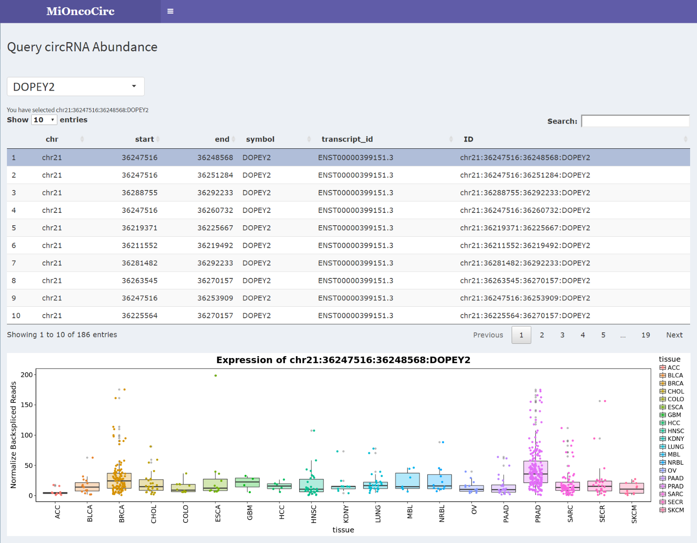

MiOncoCirc is the first extensive clinical, cancer-centric resource of circRNAs. Most importantly, our database has been largely constructed from clinical cancer samples (2,000+) across a plethora of disease sites, while other resources have characterized circRNAs from cancer cell lines. The transcriptional processes, and resulting circRNA formation, that occur in a dish versus a native tumor microenvironment will undoubtedly be vastly different, making MiOncoCirc a better representation of the true circRNA profile associated with cancer. Furthermore, MiOncoCirc represents a rich resource containing circRNAs from primary tumors, metastases, and very rare cancer types, novel features compared to the other databases. Researchers who are interested can also query mutations and copy-number since MiOncoCirc samples are collected from previously published genomic papers (Mody et al., 2015, Robinson et al., 2015, and Robinson et al., 2017).
The transcriptome for each sample was profiled by paired-end, strand specific capture RNA-seq with moderate depth (~50M-60M). To detect backspliced (circular) reads from RNA-seq libraries, we used the pipeline CIRCexplorer (Zhang et al., 2014). CIRCexplorer has been shown to achieve high sensitivity and specificity among current circRNA bioinformatics tools (Hansen at al., 2015). In addition, we employed the pipeline CODAC to discover a new class of circRNAs, read-through circRNAs (rt-circRNA). CODAC was initially developed to call structural rearrangements in paired-end RNA-seq but has been recently extended to the annotation of circRNAs, especially those that involve more than one gene.
Using our "Query Data" page), the users can browse all circRNAs of any chosen gene. Furthermore, by clicking on the circular isoform on the displayed table, the users can see its abundance across different cancer lineages.
